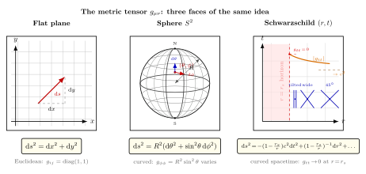

度规 $g_{\mu\nu}$ 究竟编码了什么?
第 4 节我们写下 Minkowski 度规 $\eta_{\mu\nu} = \mathrm{diag}(-1,1,1,1)$, 第 5 节看了它在加速观察者的"皮肤"下变成 Rindler 形式 $\mathrm{d}s^2 = -\xi^2\mathrm{d}\eta^2 + \mathrm{d}\xi^2$. 这两件事告诉我们一个共同的事实: 同一个时空, 用不同坐标写出来的度规分量可以完全不同, 但 $\mathrm{d}s^2$ 这个标量永远不变. 这正是度规作为"几何身份证"的根本性质. 在弯曲时空里这件事更尖锐: 我们写不出全局笛卡尔, 只能依靠 $g_{\mu\nu}$ 在每一点告诉我们"如何丈量". 这一节把这个对象从头到尾解剖清楚.
一、从 Pythagoras 到线元 — 度规的诞生
初中你就学过欧几里得平面上的勾股定理: 两点 $P_1=(x_1,y_1)$ 与 $P_2=(x_2,y_2)$ 的距离 $\Delta s = \sqrt{(\Delta x)^2 + (\Delta y)^2}$. 把它写成微分形式 — 取无穷接近的两点, 距离的平方就是
$$ \mathrm{d}s^2 = \mathrm{d}x^2 + \mathrm{d}y^2. \tag{1}$$
方程 (1) 看起来平凡, 但它隐藏一件事: 系数 $1, 1$ (在 $\mathrm{d}x^2$ 与 $\mathrm{d}y^2$ 前) 不是天上掉下来的, 它们是选了笛卡尔坐标之后, 平面欧几里得几何赏给你的礼物. 换一套坐标 (比如极坐标 $x = r\cos\phi, y = r\sin\phi$), 同样一片平面, 同一个 $\mathrm{d}s$, 系数变成
$$ \mathrm{d}s^2 = \mathrm{d}r^2 + r^2\,\mathrm{d}\phi^2. \tag{2}$$
这下系数就不全是 $1$ 了 — $\mathrm{d}\phi^2$ 前面挂着 $r^2$, 它依赖于点的位置. 把方程 (1) 与 (2) 摆在一起, 你会注意一件让 Riemann 1854 受启发的事: "度规系数依赖位置"并不一定意味着空间本身弯曲, 也可能只是坐标的选择碰巧让它们看起来在变. 真正区分"曲与不曲"的不是 $g_{ij}$ 长什么样, 而是它的二阶导数组成的Riemann 张量. 这件事我们留到第 9 节展开, 这里先把度规这个对象本身看清楚.
把 (1) 的两条系数收拢成一张矩阵, 就是平面欧几里得度规:
$$ g_{ij}^{\,\text{flat}} = \begin{pmatrix} 1 & 0 \\ 0 & 1 \end{pmatrix}, \qquad g_{ij}^{\,\text{polar}} = \begin{pmatrix} 1 & 0 \\ 0 & r^2 \end{pmatrix}. \tag{3}$$
左是笛卡尔, 右是极坐标. 两种写法描述的是同一个平面 — 你用尺子在桌上画一个三角形, 它的边长可以用 (1) 量也可以用 (2) 量, 数字一致. 这就是坐标变换不变性的最朴素体现.
二、度规的形式定义 — 对称二阶张量
把上面的写法从二维欧氏空间推到 $n$ 维流形, Riemann 给的定义是: 在每一点 $x \in M$ 上, 度规是一个对称、非退化的二阶协变张量 $g_{\mu\nu}(x)$. 写成线元的语言:
$$ \mathrm{d}s^2 = g_{\mu\nu}(x)\,\mathrm{d}x^\mu\,\mathrm{d}x^\nu, \qquad g_{\mu\nu} = g_{\nu\mu}. \tag{4}$$
方程 (4) 是本节的主公式. 重复求和约定: $\mu, \nu$ 各跑遍 $0, 1, 2, \ldots, n-1$. 在 4 维时空 ($n=4$), $g_{\mu\nu}$ 是一个 $4\times 4$ 对称矩阵, 独立分量数 $4(4+1)/2 = 10$ — 这正是 Einstein 场方程要求解的 10 个未知函数.
"对称"意味着 $g_{\mu\nu} = g_{\nu\mu}$ — 它的反对称部分对 $\mathrm{d}s^2$ 没有贡献 (因为 $\mathrm{d}x^\mu\mathrm{d}x^\nu$ 关于 $\mu\nu$ 对称, 反对称部分缩并为零). "非退化"意味着 $\det(g_{\mu\nu}) \neq 0$, 它的逆矩阵 $g^{\mu\nu}$ 是良定义的 vector ↔ co-vector 字典:
$$ g^{\mu\alpha}\,g_{\alpha\nu} = \delta^\mu{}_\nu. \tag{5}$$
用 $g_{\mu\nu}$ 把指标"压下" (vector 变成 1-form), 用 $g^{\mu\nu}$ 把指标"举起" (1-form 变回 vector) — 这是张量分析里"升降指标"的全部内容.
"非退化"还有一个几何意涵: $g_{\mu\nu}$ 作为对称矩阵, 可以对角化成 $\mathrm{diag}(\pm 1, \pm 1, \ldots)$ 的形式. 正负号的个数差称为signature (符号差). 黎曼几何取 signature $(+, +, \ldots, +)$, 全正 — $\mathrm{d}s^2$ 是正定的, 总为正. 而我们的时空取 signature $(-, +, +, +)$, 一个负号三个正号 — $\mathrm{d}s^2$ 可正可负可零, 正负不同对应不同的因果类型. 这就是 SR / GR 与纯粹空间几何的关键区别.
规定:
- 类时 (timelike): $\mathrm{d}s^2 \lt 0$, 物质粒子的世界线就走这种间隔. 定义固有时 $\mathrm{d}\tau^2 = -\mathrm{d}s^2/c^2$.
- 类空 (spacelike): $\mathrm{d}s^2 \gt 0$, 这是"同时"的两件事, 它们之间不能有因果联系. 此时 $\mathrm{d}\ell = \sqrt{\mathrm{d}s^2}$ 是空间距离.
- 类光 (null): $\mathrm{d}s^2 = 0$, 光线走这种轨迹, 张出光锥结构.
这一切, 都浓缩在一个对称矩阵 $g_{\mu\nu}(x)$ 里.
等价类的视角. 也许你会想问: 为什么定义里要求"非退化"? 因为如果 $\det g_{\mu\nu} = 0$, 就存在一个非零向量 $v^\mu$ 使 $g_{\mu\nu}v^\nu = 0$ — 这个向量在度规眼里"长度为零却不是零向量", 升降指标不再可逆, 整个张量代数崩溃. 数学上这意味着流形的某些方向"失踪了", 物理上这通常对应某种坐标病变, 比如球极点 $\theta = 0$ 处的 $\sin\theta \to 0$ 让 $g_{\phi\phi}$ 退化, 或 Schwarzschild 视界处 $1-r_s/r \to 0$ 让 $g_{tt}$ 退化. 它们都不是物理时空真坏了, 而是那一套坐标不再合用 — 换一套坐标 (比如球面用立体投影, 视界用 Kruskal-Szekeres) 度规就重新非退化. 这就是为什么 GR 老师反复念叨"度规分量看起来奇异, 不一定意味着时空奇异; 要看曲率张量分量是否真的发散".

三、三个例子 — 平面、球面、Schwarzschild
度规这个对象再抽象, 也得落到具体例子才看得见. 我们走三个台阶, 由易到难.
例 (a) 二维欧氏平面. 度规 (1), 矩阵 $g_{ij} = \mathrm{diag}(1,1)$. 处处一样, 不依赖坐标. 这是最简单的"flat space". 任何长度计算都用勾股定理. 一根 $\mathrm{d}x = 3, \mathrm{d}y = 4$ 的小段长度 $\mathrm{d}s = 5$.
例 (b) 球面 $S^2$ (半径 $R$). 在球坐标 $(\theta, \phi)$ ($\theta$ 余纬度, $\phi$ 经度) 下, 球面线元写成
$$ \mathrm{d}s^2 = R^2\left(\mathrm{d}\theta^2 + \sin^2\theta\,\mathrm{d}\phi^2\right). \tag{6}$$
对照 (4), 度规矩阵
$$ g_{ij} = \begin{pmatrix} R^2 & 0 \\ 0 & R^2\sin^2\theta \end{pmatrix}. \tag{7}$$
关键之处: $g_{\phi\phi} = R^2\sin^2\theta$ 依赖位置 (依赖纬度 $\theta$). 在赤道 $\theta = \pi/2$, $g_{\phi\phi} = R^2$, 一圈周长 $\int_0^{2\pi}\sqrt{g_{\phi\phi}}\,\mathrm{d}\phi = 2\pi R$. 在极点附近 $\theta \to 0$, $g_{\phi\phi} \to 0$, 一圈周长趋于零 — 这反映极点是坐标奇点, 物理上球面在那儿一切照旧. 取 $R = 1$ 的具体数: 沿赤道走 $\mathrm{d}\phi$ 弧度, 移动距离正好 $\mathrm{d}\phi$; 沿 $\theta = 60^\circ$ 的纬度圈走 $\mathrm{d}\phi$, 距离 $\sin 60^\circ \cdot \mathrm{d}\phi \approx 0.866\,\mathrm{d}\phi$. 度规分量给出"局部缩放因子".
球面是真正弯曲的二维流形 (与平面不同), 这从 (6) 一眼看不出, 但 Gauss 1827 用Theorema Egregium证明了: 不必嵌入到三维, 仅凭 $g_{ij}$ 与它的导数, 就能算出一个内蕴曲率, 球面的高斯曲率 $K = 1/R^2 \gt 0$. 这是 Riemann 把 Gauss 推广到任意维数后的核心起点.
例 (c) Schwarzschild 时空. 一个静态、球对称、真空 (除中心外无物质) 解. 1916 年 Karl Schwarzschild 在第一次世界大战的俄国战壕里几个星期里写出, 用 $(t, r, \theta, \phi)$ 坐标:
$$ \mathrm{d}s^2 = -\left(1 - \frac{r_s}{r}\right)c^2\,\mathrm{d}t^2 + \left(1 - \frac{r_s}{r}\right)^{-1}\mathrm{d}r^2 + r^2\left(\mathrm{d}\theta^2 + \sin^2\theta\,\mathrm{d}\phi^2\right). \tag{8}$$
这里 $r_s = 2GM/c^2$ 是Schwarzschild 半径. 给定一个质量 $M$ — 太阳 $M_\odot \approx 2\times 10^{30}\,\mathrm{kg}$ — 数 $r_s$ 算出 $\approx 2.95\,\mathrm{km}$. 地球 $r_s \approx 8.87\,\mathrm{mm}$. 如果整个地球被压缩进半径 $\approx 9$ mm, 它就坍缩成黑洞.
方程 (8) 三件值得逐项看的事:
- $g_{tt} = -(1-r_s/r)c^2$. $r \to \infty$ 时 $g_{tt} \to -c^2$, 就是 Minkowski 的时间分量 $-c^2$. 这叫"asymptotically flat" — Schwarzschild 时空在远处趋于平直, 与我们日常的 SR 直觉接得上. $r \to r_s$ 时 $g_{tt} \to 0$ — 时间分量"消失". 这就是事件视界: 远处观察者 (用 $t$ 计时) 看到落入物体永远到不了 $r_s$, 因为 $\mathrm{d}t \to \infty$ 才能换得有限的固有时间.
- $g_{rr} = (1-r_s/r)^{-1}$. $r \to r_s$ 时 $g_{rr} \to \infty$ — 一个被坐标膨胀到无限的径向"长度". 跟 Rindler $\xi \to 0$ 处的奇异性同一性质, 是坐标奇点而非物理奇点. 真正物理奇点在 $r = 0$, 那里曲率张量分量发散.
- $g_{\theta\theta} = r^2$, $g_{\phi\phi} = r^2\sin^2\theta$. 这部分是球面线元的"放大版" — 半径变成 $r$. 注意这个 $r$ 不是"中心到那点的距离" (那个距离要积分 $\int\sqrt{g_{rr}}\,\mathrm{d}r$, 比 $r$ 大), 而是"那个 $r$-球的几何半径" (使一个完整球面面积等于 $4\pi r^2$ 的参数). Schwarzschild 把 $r$ 这样定义, 使度规简洁.
把这三件事放一起, (8) 描绘了一个"远处平直、近处时间被卷起、$r=r_s$ 处一类坐标失效"的弯曲时空. 第 12 节我们会从 Einstein 场方程导出 (8); 这一节先把它当成一个"度规长什么样"的代表. 写在矩阵里:
$$ g_{\mu\nu} = \mathrm{diag}\!\left(-(1-r_s/r)c^2,\ \tfrac{1}{1-r_s/r},\ r^2,\ r^2\sin^2\theta\right). \tag{9}$$
对角的, 因为 Schwarzschild 是静态球对称解 — 没有混合项 $\mathrm{d}t\mathrm{d}r$. 旋转黑洞 (Kerr) 度规会在 $\mathrm{d}t\mathrm{d}\phi$ 项产生非对角元素, 那是后话.
四、度规决定一切几何 — 派生量的链式结构
度规之所以是 GR 的"基本变量", 是因为所有几何量都是它的导数. 我们把这个链条点出来 (具体推导留到第 7-10 节).
第一层: Christoffel 符号 $\Gamma^\rho_{\mu\nu}$. 由度规的一阶导数构成:
$$ \Gamma^\rho_{\mu\nu} = \tfrac{1}{2}\,g^{\rho\sigma}\big(\partial_\mu g_{\nu\sigma} + \partial_\nu g_{\mu\sigma} - \partial_\sigma g_{\mu\nu}\big). \tag{10}$$
它本身不是张量 (随坐标变换不按张量规则变), 但它告诉"如何把一个向量从一点平移到邻近点而不改变方向". 这就是测地方程的灵魂 (第 7 节).
第二层: Riemann 曲率张量 $R^\rho{}_{\sigma\mu\nu}$. 由 $\Gamma$ 的一阶导数加 $\Gamma\Gamma$ 二次项构成 — 即度规的二阶导数. 它衡量"沿一条小回路平移一个向量, 它会偏多少". 偏 $0$ 意味着空间平直; 偏不为 $0$ 意味着真正弯曲. 这是 Gauss 的 Theorema Egregium 在任意维的推广 (第 9 节).
第三层: Ricci 张量 $R_{\mu\nu} = R^\rho{}_{\mu\rho\nu}$, 标量曲率 $R = g^{\mu\nu}R_{\mu\nu}$. 把 Riemann 缩并掉得到的更"粗"但更易处理的曲率指标 — 它们直接出现在 Einstein 场方程的左端 (第 10 节).
关键结论: 一旦写下 $g_{\mu\nu}(x)$, 整个 GR 的剧情 — 测地线、潮汐力、黑洞视界、引力波、宇宙学膨胀 — 全是它派生出来的. 这就是为什么 Einstein 1915 把 $g_{\mu\nu}$ 选作引力的基本场变量: 引力不再是一种"力", 而是时空几何的弯曲, 而几何由度规完全编码.
历史路线. 这条路不是 Einstein 一人走出. 1854 年 Bernhard Riemann 在哥廷根的就职演讲 "Über die Hypothesen, welche der Geometrie zu Grunde liegen" (论几何基础所依赖的假设) 把 Gauss 的二维曲面理论推到任意 $n$ 维, 引入 $g_{ij}$ 作为流形上"长度"的统一来源, 并构造了曲率张量. 这个工作对当时数学界过于超前 — Riemann 三十九岁早逝, 演讲稿在他死后才出版. 接力的是 Christoffel (1869, 引入 Christoffel 符号), Ricci-Curbastro 与 Levi-Civita (1900, 整理出"绝对微分学"即张量演算), 直到 1912 年 Einstein 听 Marcel Grossmann 说"你要的数学工具都在 Ricci-Levi-Civita 那里了". 1913-1915 年, Einstein 与 Grossmann (后者负责数学) 把度规 $g_{\mu\nu}$ 选作动力学变量, 试错三年 (期间一度走错路, 1914 年的"Entwurf 理论"差一点错过 Mercury 进动), 最终在 1915 年 11 月 25 日的 Berlin Academy 报告里写出场方程 $G_{\mu\nu} = (8\pi G/c^4) T_{\mu\nu}$. 度规作为引力场的故事至此定型.
对称性视角. 度规还藏着另一件事: 对称性. 一个度规 $g_{\mu\nu}$ 若在某个无穷小坐标变换 $x^\mu \to x^\mu + \epsilon\,\xi^\mu$ 下保持不变, 称 $\xi^\mu$ 为Killing 向量场. Killing 方程 $\nabla_\mu \xi_\nu + \nabla_\nu \xi_\mu = 0$. Schwarzschild 度规 (8) 因为不依赖 $t$, 所以 $\partial_t$ 是 Killing 向量 — 时间平移对称性 — 它直接给出能量守恒. 因为不依赖 $\phi$, $\partial_\phi$ 也是 Killing 向量 — 旋转对称性 — 给出角动量守恒. 度规的对称性, 通过 Killing 向量, 直接翻译成守恒律. 这是 Noether 定理在弯曲时空里的化身, 也是我们在第 12 节算 Schwarzschild 测地线时的核心工具.
小结
度规 $g_{\mu\nu}$ 是这一卷往后所有故事的母题. 它是一张随位置变化的对称矩阵表, 通过线元 $\mathrm{d}s^2 = g_{\mu\nu}\mathrm{d}x^\mu\mathrm{d}x^\nu$ 编码"局部如何丈量"; 通过其导数派生 Christoffel、Riemann、Ricci, 进而决定测地线与场方程; 通过其对称性 (Killing 向量) 决定守恒律. 三个例子构成本节的台阶: 平面 (常度规)、球面 (位置相关、内蕴弯曲)、Schwarzschild (时空、视界、奇点). 三个度规系数的signature都让我们一眼看清空间是黎曼几何 (全正) 还是时空几何 ($(-,+,+,+)$). 接下来第 7 节我们把度规交给"测地线方程": 在弯曲时空里, 自由落体的物体走 $g_{\mu\nu}$ 给出的"最直"路径 — 这就是为什么 Newton 的"引力"在 Einstein 这里变成"几何". 第 8 节讲平移如何依赖路径, 第 9 节直接构造 Riemann, 第 10 节缩并得到 Einstein 张量. 度规是这条链子的第一环, 后面每一节都把它推进一步.
▲